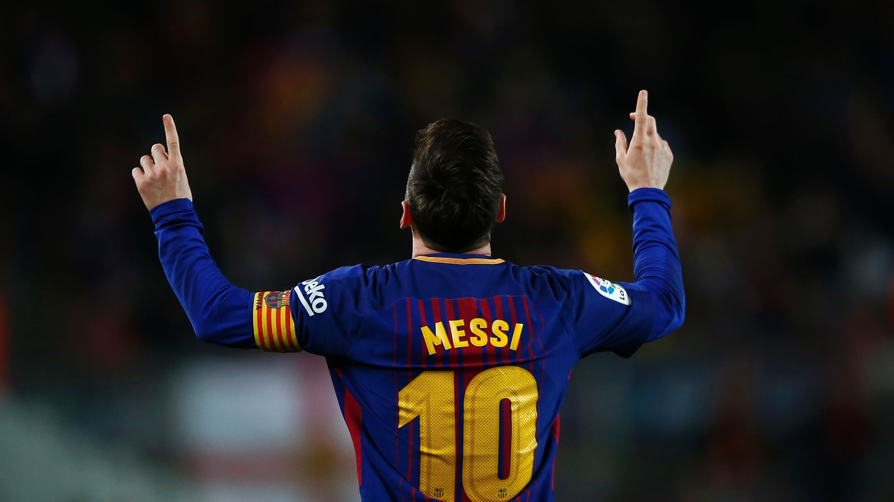

Lionel Messi
The GOD of Football

Quite possibly one of the best, if not THE best football players of ALL TIME.
***It would take me an incredible amount of time to list ALL his achievements, especially considering
he has not yet retired but maybe someday this page will contain a more complete list.***
- 1987 - Born on 24th June in Rosario, Argentina
- 1993 - Messi Joins Newell's Old Boys at age 6 and scores almost 500 goals during his 6 year spell at the club
- 1997 - Messi is diagnosed with growth hormone deficiency threatening his future as a professional player
- 2000 - Messi and his dad arrage to have a trail with Barcelona in Septermber 2000.
- 2001 - In Feb 2001 Messi and his family relocate to Barcelona, messi could only play limited football due to his contractual obligation with his old club
He played mostly in friendlies and in the Catalan league. - 2002 - Messi finally enrolled with the Royal Spanish Football Federation at age 14 after completing his treatment for growth hormone defeciency. This is where he met Fabregas and Pique.
- 2003 - Messi completed his first full season and was top scorer with 36 goals in 30 games for Cadetres A who won a treble and both Spanish and Catalan cups.
- 2004 - Messi quicky Rose through the first team ranks from youth team to Barcelona C to Barceloan B and was promoted to first team on October 2004.
Messi made his first league debut on October 16th 2004 against Espanyol. At 17 years, three months and 22 days old he was at the time the youngest palyer to represent Barcelona in an offical competetion. - 2005 - Messi Scored his first senior goal on May 1st 2005 against Albacete, from an assist by Ronaldinho, becoming the youngest ever scorer for the club at age 18. Barcelona won the league for the first time in six years that year.
On June 24th 2005, his 18th birthday Messi signed his first contract as a senior team palyer, which made him a Barcelona palyer till 2010 and his buyot clause increased to $ 150 million euro.
Soon after he signed his contract with Barca, Inter Milan were willing to pay his $150 million buyout as well as tripple is wages, it was probably the first and ONLY time FC Barcerlona were in danger of losing Messi but Messi ultimately decided to stay with teh club - 2006 - Messi begins to establish his role as a first team player and a definitve starter as a winger. Even though this season was plagued with injures he scored 17 goals in 36 games for FC Barcelona.
- 2007 - Messi scored his first Hat-trick in a Classic, the first palyerd to do so in 12 years.
- 2008 - Although Messi was fitting in well in teh first team, Barcelona were trophyless for the majory of the previous 2 season leading to the departure of the coach and Ronaldinho
The #10 shirt previously worn by Ronaldinho was then given to Lionel Messi and on July 2008 Messi signed a new contract with an annual salary of $7.8 million, becoming the club's highest-paid player. - 2009 - His first injurey free campaign the 2008-2009 season Messi scored 38 goals in 51 games and a total of 100 goals in all competitions, a record at the time for FC Barcelon.
At 22 years old, Messi won his first Ballon d'Or and the FIFA Worls Player of the Year award, both times by the greatest voting amrgin in each trophy's history. - 2010 - Messi wins his second Ballon d'Or
- 2011 - Messi wins his Third consecutive Ballon d'Or
- 2012 - Messi wins his Fourth Consecutive Ballon d'Or
Here's a time line of Messi's life
"I feel sorry for those who want to compete for Messi's throne – it's impossible, this kid is unique."
-- Pep Guardiola after Messi became Barcelona's all-time top scorer at age 24 in March 2012